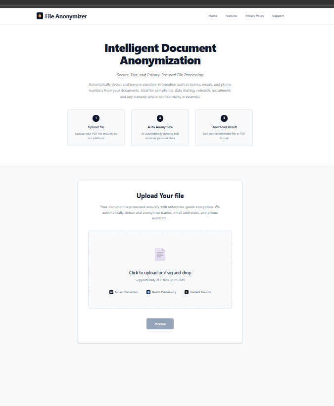
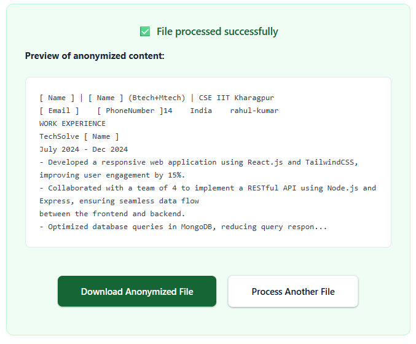

🔒 File Anonymizer
The File Anonymizer is a secure document anonymization system built to help users safeguard their personal information before sharing files online. Whether documents are uploaded to cloud platforms, social media, AI tools like ChatGPT, or shared through emails, this tool ensures sensitive data remains protected. It automatically extracts text from PDFs using the Fitz library and applies a hybrid of machine learning models and regex rules to detect and anonymize private details such as names, phone numbers, and email addresses. The processed text is then regenerated into a professional, clean PDF using FPDF2 with DejaVuSans font support. A Flask-powered web interface allows users to seamlessly upload files, anonymize them in real time, and download the secured version. By automating privacy protection, this project reduces manual effort, prevents accidental data leaks, and ensures confidentiality, compliance, and safe document sharing across platforms.
🚀 Key Features
- PDF Text Extraction – Extracts text from PDF files using Fitz.
- Privacy Protection – Automatically detects and anonymizes sensitive data like names, emails, phone numbers.
- PDF Regeneration – Converts the processed text back into a clean, readable PDF with proper font support.
- Web Interface – User-friendly frontend with Flask, HTML, CSS, and JavaScript.
- Download Option – Provides the anonymized PDF as a secure downloadable file.
- Fast & Automated – End-to-end automated anonymization with minimal user effort.
System Demo
Web Interface
This is the interactive web interface built with Flask, HTML, CSS, and JavaScript.It allows users to upload PDF documents, initiate the anonymization process, and download the processed file seamlessly.
Anonymized Document (PDF Output)

This output represents the final anonymized PDF that users can securely download and share. It ensures that sensitive information is fully protected while keeping the document professional and easy to use. Such an output is essential when handling confidential files that need to be redistributed without exposing personal data.
Anonymized Text
This output shows the plain text version of the document after sensitive details are anonymized. It provides a quick and transparent way to verify that all personal data has been detected and masked correctly. This intermediate view is especially valuable for validation before generating the final PDF.